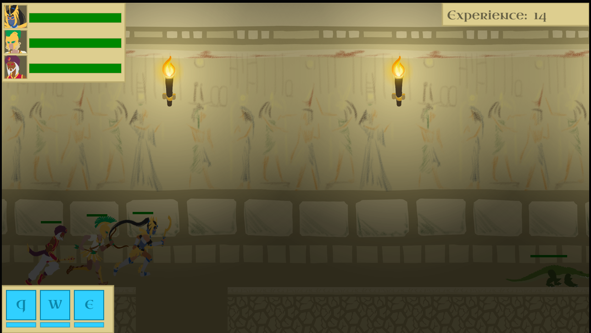

◀
▶
Leap of Faith is a 2D sidescroller runner that was created in 5 weeks. The player controls three characters which they can switch between freely, each with three abilities they can use to try to defeat the current enemy while surviving as long as possible. I acted as the lead gameplay programmer and engine developer.
Leap of Faith was created in Javascript using canvas and a custom game engine I wrote myself. It uses the same lighting engine that's present in Lumina. My work on the engine included the code for game objects (movement, jumping, and platforming physics), input recognition and routing, and survivability elements such as entity health and ability cooldowns.
I deinitely have more ideas of what I would do if I were to work further on this project. I would like to add varied environments that the levels can progress through, as currently it becomes stale fairly quickly. I'd also like to add difficulty settings that change the complexity of the gameplay - a harder difficulty could exist where abilities don't auto-aim, and multiple enemies can exist on screen at the same time. I also see potential for more diversity in the enemies and levels, including levels where the direction changes over time, and end of level bosses.
The game is styled as taking place in an Egyptian temple. This is partially reflected in the characters, whose style is inspired by a mix of ancient Egypt and Greece.
The player controls a party of three characters: a paladin, a ranger, and a magi. They can freely switch the running order of the party, which automatically runs to the right at all times. Using the ability keys (Q-W-E) uses the three different abilities of whoever is at the front of the party. Players also control the jumping of the party leader, but the other party members jump automatically based on when the leader jumps. All three characters have completely differing ability sets (some abilities and mechanics are shared between Leap of Faith and Lumina). This makes the gameplay very tense and active; you will constantly be switching party members back and forth, and activating various abilities quickly by analyzing the situation of the fly.